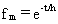

4.10 SOURCE MASS BUDGET
The
emission of a constituent will deplete the inventory of that constituent
at the site. With one exception, the depletion of the mass by a gaseous
emission in the inventory of an area source is assumed to proportionally
reduce the emission rate. The exception is for the case of a landfill treatment/old
spill volatilization computation where a constant emission rate is assumed
with a linear reduction in the inventory. The depletion of mass for particulate
emissions also does not change the emission rate.
For sites where the inventory is known, or can be estimated, the proportional depletion is computed using

(67)
where
fm = mass emission depletion fraction
t = elapsed time (s)
H = mass removal half-life (s).
In the current MEPAS user interface implementation, the default is to assume
that source depletion occurs for all gaseous and particulate constituents
in an area source case for which inventories are input. The investigator
has the option of defining an average emission rate for a 70-year period
with no inventory, or an initial emission rate with the inventory. The
former requires that the investigator externally account for mass depletion,
and the latter allows use of MEPAS formulations to account for the source
depletion.